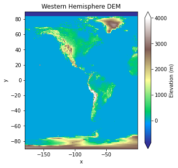
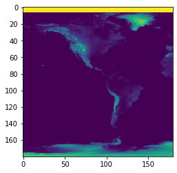
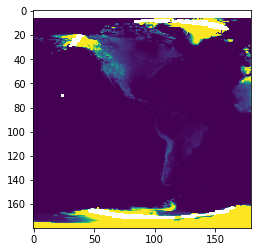
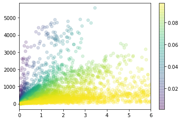

[105]:
import goes_ortho
[106]:
# Ground position
lon_deg = -119 # longitude of ground point in degrees
lat_deg = 37 # latitude of ground point in degrees
z = 3000 # height of ground point above ellispoid in meters
# GRS 80 ellipsoid parameters
req = 6378137.0 # semi-major axis (equatorial radius) in meters
rpol = 6356752.31414 # semi-minor axis (polar radius) in meters
e = 0.0818191910435 # eccentricity (plane through poles)
# Satellite position
H = 42164160.0 # satellite height from center of ellipsoid in meters
lon_0_deg = (
-75.2
) # sub-satellite point longitude in degrees (assumes sub-satellite latitude = 0)
[107]:
# Original projection (no orthorectification)
x_original, y_original = goes_ortho.LonLat2ABIangle(
lon_deg, lat_deg, 0, H, req, rpol, e, lon_0_deg
)
# Project back onto lat/lon map
lon_original, lat_original = goes_ortho.ABIangle2LonLat(
x_original, y_original, H, req, rpol, lon_0_deg
)
# Taking height above ellispoid into account (orthorectification)
x_ortho, y_ortho = goes_ortho.LonLat2ABIangle(
lon_deg, lat_deg, z, H, req, rpol, e, lon_0_deg
)
# Project back onto lat/lon map
lon_ortho, lat_ortho = goes_ortho.ABIangle2LonLat(
x_ortho, y_ortho, H, req, rpol, lon_0_deg
)
[108]:
print(x_original, y_original)
print(x_ortho, y_ortho)
print("\n")
print(lon_original, lat_original)
print(lon_ortho, lat_ortho)
-0.09102619927785786 0.09887293213489763
-0.0910724535008453 0.0989236178278887
-119.0 36.99999999999999
-119.05492120066657 37.027503742516735
Calculate distance, spherical approximation:
[112]:
def great_circle(lon1, lat1, lon2, lat2):
# https://medium.com/@petehouston/calculate-distance-of-two-locations-on-earth-using-python-1501b1944d97
lon1, lat1, lon2, lat2 = map(np.radians, [lon1, lat1, lon2, lat2])
dist = 6371 * np.arccos(
np.sin(lat1) * np.sin(lat2) + np.cos(lat1) * np.cos(lat2) * np.cos(lon1 - lon2)
)
return dist
def haversine(lon1, lat1, lon2, lat2):
# https://medium.com/@petehouston/calculate-distance-of-two-locations-on-earth-using-python-1501b1944d97
lon1, lat1, lon2, lat2 = map(np.radians, [lon1, lat1, lon2, lat2])
dlon = lon2 - lon1
dlat = lat2 - lat1
a = np.sin(dlat / 2) ** 2 + np.cos(lat1) * np.cos(lat2) * np.sin(dlon / 2) ** 2
dist = 2 * 6371 * np.arcsin(np.sqrt(a))
return dist
[113]:
great_circle(lon_original, lat_original, lon_ortho, lat_ortho)
[113]:
5.756028361927186
[114]:
haversine(lon_original, lat_original, lon_ortho, lat_ortho)
[114]:
5.756028361435808
[26]:
import matplotlib.pyplot as plt
import numpy as np
import xarray as xr
[27]:
dem = xr.open_rasterio("GMTED2010_W_1deg_mean.tif")
[28]:
plt.figure(figsize=(5, 5))
dem.plot(
vmin=-850,
vmax=4000,
cmap="terrain",
zorder=0,
cbar_kwargs={"label": "Elevation (m)"},
)
plt.title("Western Hemisphere DEM");

[62]:
x, y = np.meshgrid(dem.x, dem.y)
[63]:
dem0 = xr.DataArray(
np.zeros_like(dem),
coords={"band": dem.band, "x": dem.x, "y": dem.y},
dims=("band", "x", "y"),
)
[abi_grid_x0, abi_grid_y0] = goes_ortho.LonLat2ABIangle(
x, y, np.zeros_like(dem.values.squeeze()), H, req, rpol, e, lon_0_deg
)
[64]:
[abi_grid_x, abi_grid_y] = goes_ortho.LonLat2ABIangle(
x, y, dem.values.squeeze(), H, req, rpol, e, lon_0_deg
)
[78]:
plt.imshow(
np.sqrt((abi_grid_x0 - abi_grid_x) ** 2 + (abi_grid_y0 - abi_grid_y) ** 2),
vmin=0,
vmax=0.0001,
)
[78]:
<matplotlib.image.AxesImage at 0x7fb6a0455f98>

[135]:
lon_original, lat_original = goes_ortho.ABIangle2LonLat(
abi_grid_x0, abi_grid_y0, H, req, rpol, lon_0_deg
)
lon_ortho, lat_ortho = goes_ortho.ABIangle2LonLat(
abi_grid_x, abi_grid_y, H, req, rpol, lon_0_deg
)
dist = haversine(lon_original, lat_original, lon_ortho, lat_ortho)
/home/spestana/git/goes-ortho/goes_ortho.py:30: RuntimeWarning: invalid value encountered in sqrt
rs = ( -b - np.sqrt( b**2 - 4*a*c ) ) / ( 2 * a ) # distance from satellite point (S) to P
/home/spestana/opt/anaconda3/envs/goes-linux/lib/python3.6/site-packages/ipykernel_launcher.py:13: RuntimeWarning: invalid value encountered in arcsin
del sys.path[0]
[138]:
plt.imshow(dist, vmin=0, vmax=10)
[138]:
<matplotlib.image.AxesImage at 0x7fb67af5bb38>

[142]:
_colors = np.sqrt(abi_grid_x**2 + abi_grid_y**2)
colors = _colors / np.max(_colors)
plt.scatter(dist.ravel(), dem.values.squeeze().ravel(), c=colors, alpha=0.2)
plt.colorbar()
plt.xlim(0, 6)
[142]:
(0.0, 6.0)

[ ]: